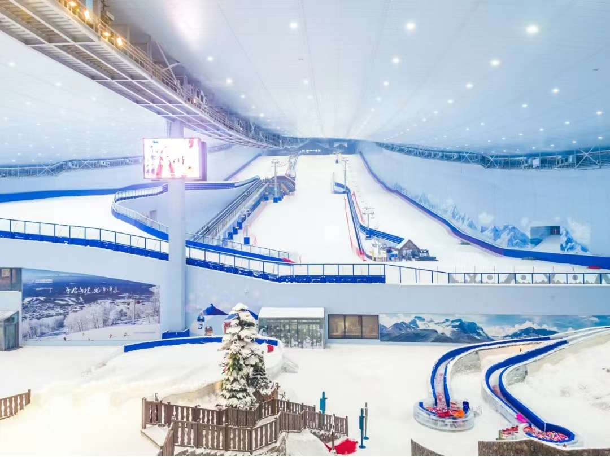
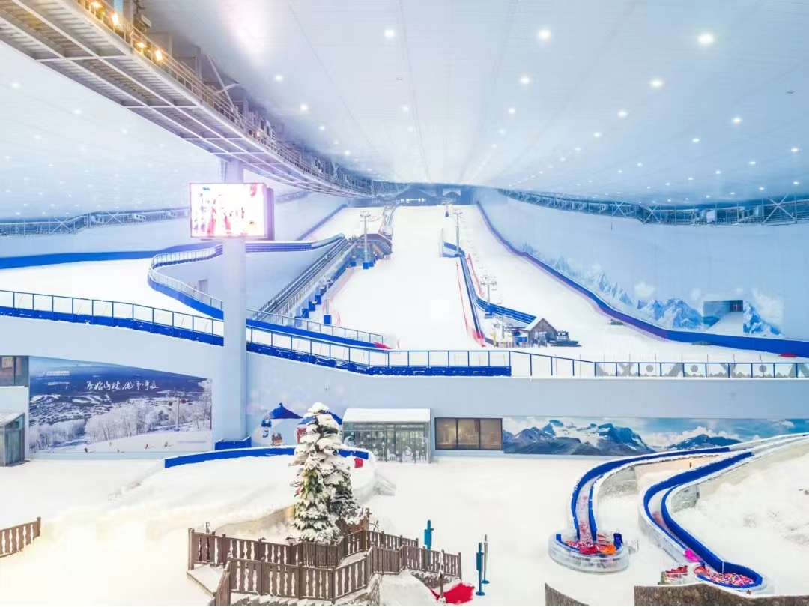

介绍
全球超大室内滑雪场 四季滑雪旅游度假目的地
哈尔滨热雪奇迹，位于黑龙江省哈尔滨市松北区（哈尔滨新区），
占地8万平方米，全年恒温-5℃。建筑外形似一架红钢琴，用钢量超北京鸟巢，
曾获得中国钢结构金奖杰出工程大奖。如今，这里已成为大众四季滑雪目的地，
更吸引了韩国、日本、俄罗斯等国内外滑雪训练队将其作为夏训基地。
雪场设施基本介绍
哈尔滨热雪奇迹设有8条不同坡度雪道，坡度25.4度，垂直落差80米。
初中高级不同坡度雪道，共约6万平方米雪道面积，让进阶体验更有挑战性。
为满足滑雪初学者的需求，哈尔滨热雪奇迹还特别设计了坡度为5°~8°的初级雪道，同时提供雪服雪具全套装备，让初学尝鲜成为可能。雪场还拥有超大娱雪区，包含雪圈、雪地转转、雪地跷跷板等经典冰雪游戏设备，是市民、游客四季玩雪的好去处。
自有“哈尔滨热雪奇迹滑雪训练中心 ”—— 先进教学体系 专业教练团队
哈尔滨热雪奇迹滑雪训练中心导师均获得滑雪社会指导员国家职业资格认证，拥有丰富的滑雪经验和教学经验。教学期间，学校会根据学员情况，制定具有针对性的教学计划。无论是滑雪初学者，还是技术进阶中的青少年，又或是挑战高难度动作的滑雪高手，在这里，都能享受定制化的教学服务。
接待服务大厅分为上下两层，包括租赁区、咖啡吧、滑雪学校和VIP室等功能区域，可为滑雪客人提供租赁、教学及餐饮等服务。
开放时间
05/31 09:00-17:00开放;
06/01-06/02 08:30-17:00开放;
06/03-06/07 09:00-17:00开放;
06/08-06/10 08:30-17:00开放
优待政策
儿童：1、年龄在 6 周岁（含）以下或身高不超过 1.2 米（含）儿童;
2、身高超过 1.2 米或年龄 6 周岁以上(不含)、18 周岁以下（不含）在校中小学生 ，优惠
学生：全日制本科或专科在校大学生（含港澳台及海外地区大学生，不含成人教育、夜大、函授、职业教育、研究生、博士），需凭有效证件购票，优惠
服务设施
停车场：【哈尔滨融创茂停车场】参考价格：停车15分钟内免费，超过15分钟（含免费停车的时间）开始计费； 停车计费标准：停车30分钟（含30分钟）以上的，按2元/辆/30分钟标准计算停车费，不足30分钟收费2元/辆； 停车24小时内最多收费40元封顶，超出24小时，按上述标准继续累加计算 ，以此类推。；地址：哈尔滨融创茂；库位：4000+；缴费方式：现金或扫描停车场二维码进行收费
行李寄存：参考价格：购票免费使用；地址：哈尔滨热雪奇迹
 
